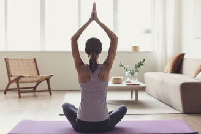
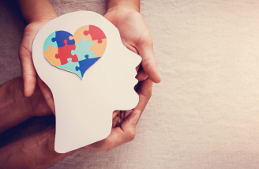

마음도씨
마음도씨는 (사)한국EAP협회의 고객사 임직원분들을 위해 마련된 심리 프로그램 전문 플랫폼입니다.
마음도씨는 지친 마음을 치유할 수 있는 쉼터이자 삶의 에너지를 높일 수 있는 재미활력 충전소입니다.
마음도씨 안에는 인생여정을 걷는 동안 연령대별로 겪게 되는 낯선 경험을 슬기롭게 대처할 수 있는 방법, 사회생활을 더욱 건강하고 자신감 있게 할 수 있는 방법, 안정과 휴식으로 몸과 마음을 치유하는 힐링, 자기이해와 마음기술을 높일 수 있는 심리 특강 등 인생을 잘 살아가는데 도움되는 실질적이고 전문적인 {{"class"| titlecase }}가 마련될 것입니다.
마음치유 재미활력 각 분야의 전문가들이 진행하는 {{"class" | titlecase}}에서 마음의 힘을 키우고, 활기찬 에너지를 충전하세요.
인생여정 {{"life journey" | titlecase}}
태어나서 자라고 성장하며 각자의 인생의 여정을 떠납니다.
우리는 모두 누구나 처음 살아보는 것이어서 잘 해보고 싶지만 서툴고 모르는 것이 많습니다.
사랑하는 사람과 아름다운 사랑을 키우고, 자녀를 안전하고 의미 있는 삶을 가꾸어 갈 수 있는 방법을 전문가들의 {{"class" | titlecase}}에서 새롭게 생각해보고 효과적인 방법을 배울 수 있습니다.
사회생활 {{"social life" | titlecase}}
사람은 혼자서 살아 갈 수 없을 뿐만 아니라 다른 사람들과 건강하게 소통하고 교류할 때 행복은 더욱 커집니다.
그러나 바램과 달리 다른 사람들과의 관계, 조직 속에서의 역할 수행 등에서 갈등을 경험하고, 상처를 받거나 혹은 자신감을 잃어 사회적 관계에 대한 두려움이 생겨나기도 합니다.
마음도씨는 건강하고 자신감 있는 사회생활을 하는데 도움되는 심리적, 사회관계적 방법을 전문가들과 함꼐 찾아가는 다양한 {{"class" | titlecase}}를 제공합니다.
힐링 {{"healing" | titlecase}}
바쁜 일상을 살아가다 보면 자칫 자신을 돌보지 못해 몸과 마음이 지치기 쉽습니다.
건강하게 앞으로 계속 나아가기 위해서는 때때로 잠시 멈추고 자신의 몸과 마음에 귀를 기울여 주세요. 반복되는 일상에서 벗어나 새로운 자극과 경험을 통해 기분을 전환하고, 에너지를 높여주세요. 명상, 요가, 홈트, 몸마음 통합, 예술치유, 힐링 DIY 등 풍성하고 다양한 {{"class" | titlecase}}로 힐링의 장을 마련합니다.
심리 {{"psychology" | titlecase}}
우리는 눈에 보이지 않지만 너무나도 힘이 센 "마음"의 영향을 받으면서 살고 있습니다. "나는 왜이럴까?", "나의 행동은 왜 내마음과 같지 않을까?", "다른 사람들은 어떻게 생각하고 있을까?".
자신의 마음을 이해하기 시작하면 자신의 모습이 보이기 시작하고, 자신에게 맞는 행복의 길을 찾아 갈 수 있습니다.
심리를 아는 것은 자신과 타인을 이해할 수 있는 유익한 출발점입니다. 심리 전문가들과 함꼐 심리 탐험을 떠나보세요.